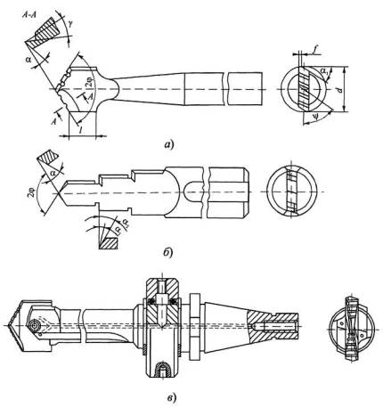

Перовые сверла известны с древних времен. Так, например, в археологических раскопках были найдены их прототипы в виде лопатки из твердого материала, заостренной на конце и предназначенной для сверления вручную отверстий в более мягких материалах. Со времени появления металлообработки перовые сверла постоянно совершенствовались. Современные конструкции перовых сверл показаны на рисунке ниже.
Цельные перовые сверла (а) изготавливают из прутка путем ковки или фрезерования режущей части в форме пластины, которая затачивается на конус под углом 2φ =118°. При этом образуются две главные и две вспомогательные режущие кромки. Заточкой двух плоских задних поверхностей создается задний угол α = 10…12°. При пересечении этих поверхностей образуется поперечная режущая кромка (перемычка). Если передние поверхности плоские, то передние углы на главных режущих кромках имеют отрицательные значения, что нежелательно из-за возрастания силовой нагрузки на сверло и появления вибраций.
Для улучшения процесса резания производится подточка передней поверхности сверла под углом γ = 5...10°, которая, однако, ослабляет прочность режущего клина. Для уменьшения трения на вспомогательных кромках затачивается задний угол α = 5...8° с оставлением узких цилиндрических фасок шириной 0,2...0,5 мм по всей длине режущей части, которые обеспечивают лучшее направление сверла в отверстии.
Примеры совершенствования конструкций перовых сверл показаны на позициях б и в. Конструкция (б) применяется для сверления неглубоких ступенчатых отверстий на станках-автоматах; позволяет сократить число операций и, следовательно, инструментов. Вторая конструкция (в) представляет собой сборное перовое сверло с режущей сменной пластиной, закрепляемой в стержне любой длины. Для улучшения отвода стружки предусматривается ее деление по ширине с помощью стружкодробящих канавок на задних поверхностях. Через патрон и отверстие в стержне можно подавать под давлением СОЖ, которая одновременно с отводом тепла из зоны резания вымывает стружку из отверстия.
Набор быстросменных пластин, разных по диаметру, позволяет сократить номенклатуру сверл и расходы на их изготовление. Такие сверла в последние годы стали широко применять на многооперационных станках с ЧПУ, главным образом при рассверливании отверстий.
Достоинствами перовых сверл являются простота конструкции, а также возможность изготовления их любого диаметра и длины даже в условиях ремонтных мастерских.